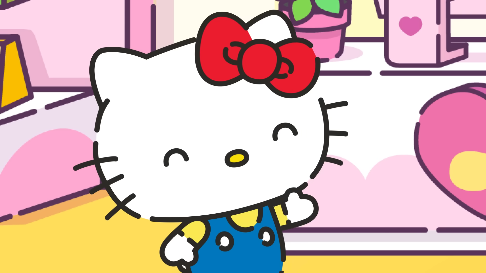

Sanrio Co., Ltd. (サンリオ Sanri o) is a multi-billiondollar Japanese entertainment company that heavily focuses on the kawaii popular culture known in that country (and became its image). It creates a wide range of designs and characters mostly based on cute and/or pure-hearted anthropomorphic animals (with generally basic appearances), and sells and licenses various products branded with these characters. These products include stationery, school supplies, gifts, accessories, and much more. Shintaro Tsuji is the founder of Sanrio and he continues to work at the company to this day despite being age 97 as of February 2025. Its slogan is "Small business, big smile". According to Shinaro himself, the purpose of Sanrio's founding is to create a peaceful culture and to help people befriend each other. He was inspired to start the now-beloved company after experiencing the hardships of war at the time.
Though the company itself is globally famous for its many iconic characters such as My Melody, Cinnamoroll, Kuromi, Keroppi and more, Sanrio's best-known is Hello Kitty, a white cat with blue overalls and yellow shirt wearing a red bow but normally has no mouth, and is its longtime mascot; she remains one of the most successful marketing brands in the world. Despite Sanrio had been selling merchandise beginning in the 1970s, it would kickstart a major media franchise based on Kitty and her friends since the mid-1980s known as Hello Kitty - the company's flagship series. A related series, Beatcats, was produced in 2020.

Hello Kitty, a white Japanese Bobtail cat with a red bow worn on her left ear and usually wears blue overalls with a yellow shirt.
These are some of the most popular characters from Sanrio, a Japanese company specializing in creating cute characters. Beginning in 1962, Sanrio sells and licenses products branded with these characters and has created over 400 characters, with the most successful and best known being Hello Kitty.
For more Sanrio characters, Click Here!